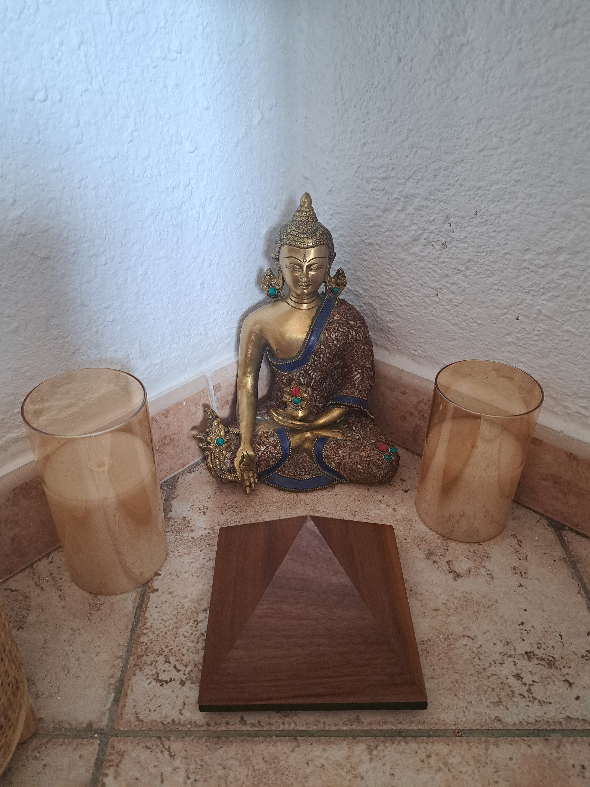
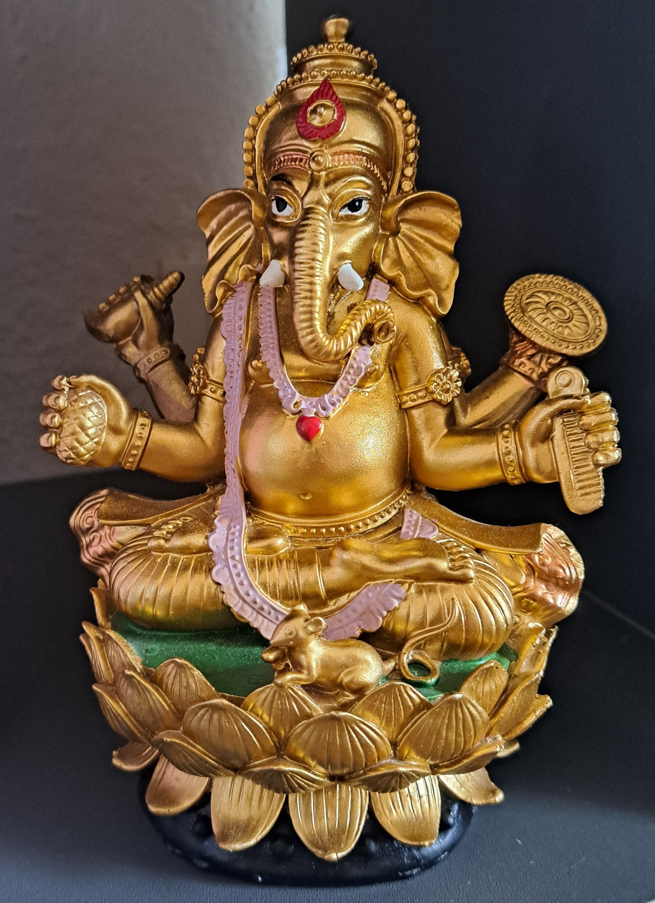
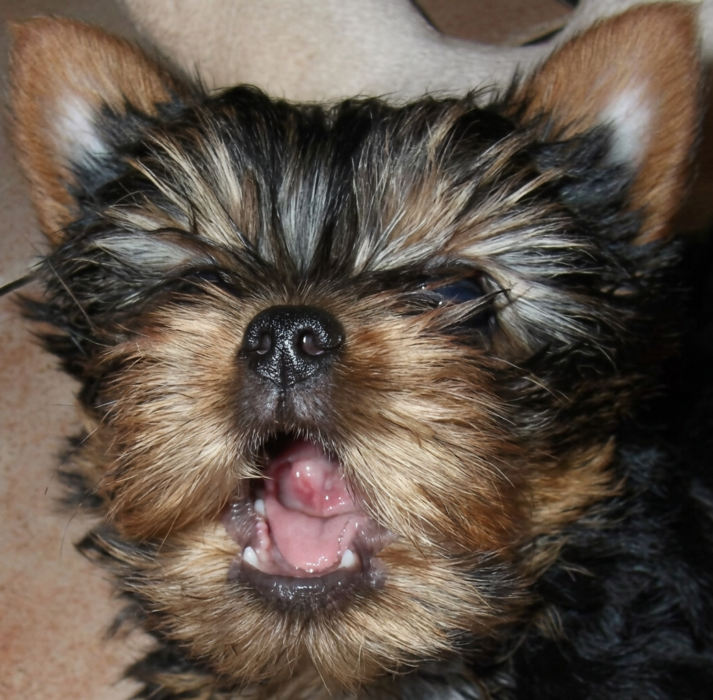
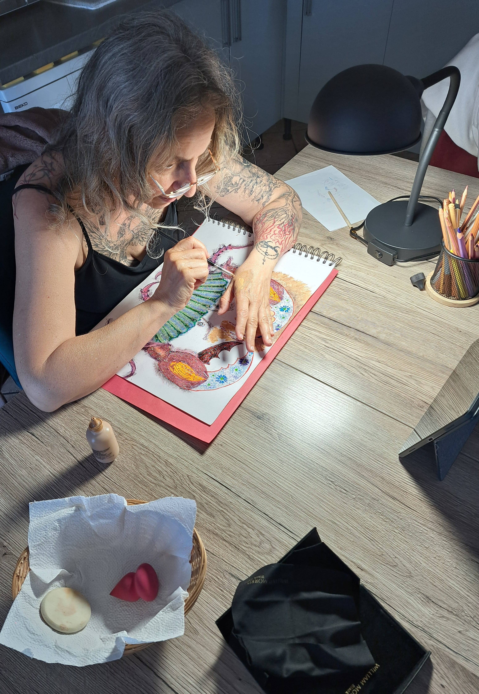
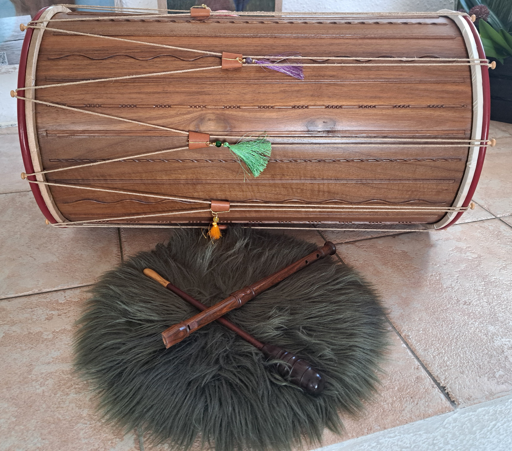
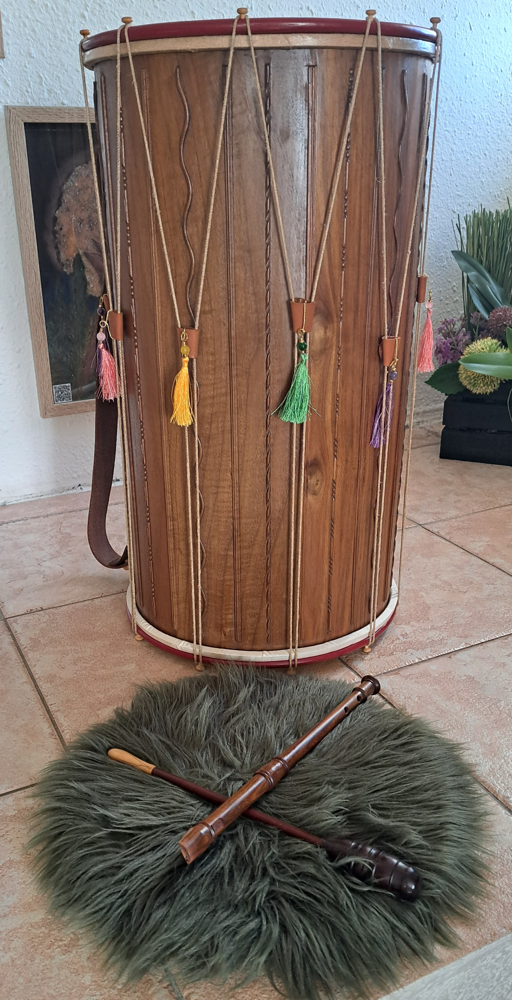

À propos — Nathalie Anne Suzan
Du diamant brut à la lumière : mon chemin de transmutation
✦ Sommaire de cette page ✦
Du Diamant Brut à la Lumière
Je m'appelle Nathalie Anne Suzan. Mon parcours n'est pas celui d'une vie épargnée, mais celui d'une vie alchimisée. Longtemps, je me suis sentie comme le "vilain petit canard", inadaptée à un monde dont je ne partageais ni les codes, ni le fonctionnement. Entre une enfance solitaire et un handicap visuel qui m'a peu à peu retiré l'accès à la lecture classique, j'ai dû apprendre à voir autrement.
Aujourd'hui, je ne regarde plus en arrière avec amertume. Chaque épreuve, chaque blessure, chaque rencontre difficile a été un ciseau venant tailler le diamant brut que je suis. Comme la fleur de lotus qui plonge chaque soir dans la boue pour renaître éclatante au matin, j'ai transformé mes ombres en une force sereine.
"Je suis née pour cela. Mon âme a choisi ce rôle de pont entre les mondes, pour transformer la souffrance en une douceur qui soigne."
— Nathalie Anne SuzanÊtre un instrument de la Source
Depuis 2022, mon chemin a pris une nouvelle dimension. Je vis ce que j'appelle une "douce malédiction", une magie que je ne peux arrêter : je suis canalisée 24h/24. Je ne suis qu'un instrument, un canal entre l'Univers (ou la Source, selon votre sensibilité) et ceux qui cherchent la lumière.
Ma solitude est celle d'une louve : choisie, protectrice et libre. Elle me permet de rester à l'écoute des murmures du monde, de l'amour des animaux, de la Terre et des planètes. Accompagnée par mes guides, notamment mes grands-parents Anna et Georges, je dédie mon existence à alléger le cœur de ceux qui croisent ma route.
Je me définis volontiers comme une "VRP de la guérison karmique". À travers L'Atelier de ces Âmes, je mets mon corps, ma voix et mes intuitions au service de ceux qui souffrent.
Ce que je vous offre
Une écoute vibratoire
Depuis l'enfance, on vient me confier ses peines. Je recueille vos douleurs pour vous permettre de repartir le cœur plus léger.
Une parole authentique
Ce que je transmets est le fruit d'une conscientisation profonde et d'un quotidien dédié à la guidance — pas des théories de livres.
Un espace de liberté
Si mes mots résonnent en vous, ce message est le vôtre. Sinon, laissez-le s'envoler. Ici, seul compte ce qui parle à votre âme.
De l'ombre des maux à la clarté des mots
Il y a trois ans, mon chemin a croisé celui de la méditation. Non pas celle que l'on imagine parfois — robotisée, cherchant à chasser les nuages noirs — mais une méditation de pleine conscience et d'accueil total. J'ai commencé sur une simple chaise, les yeux ouverts, à accueillir mes larmes, mon passé et cette petite fille intérieure qui ne demandait qu'à être entendue.
Mon corps a longtemps été ma prison. Entre la spondylarthrite ankylosante, l'aponévrose plantaire et la maladie de Crohn, j'ai connu l'enfer de l'immobilité et de la souffrance. À chaque tentative de me soigner par la chimie traditionnelle, mon âme disait "non" par des réactions violentes. Le message était clair : « Ne mets pas un couvercle sur ta souffrance. Réveille-toi. »
J'ai compris que je devais vivre cette douleur pour pouvoir, un jour, comprendre celle des autres. On ne peut guider véritablement que les sentiers que l'on a soi-même foulés.
C'est au cœur de ce silence méditatif que j'ai posé un ultimatum à l'Univers : la fin ou la vie. L'Univers a choisi la Vie.
Aujourd'hui, les vibrations que je ressens et les connexions que j'entretiens avec mes guides (dont le Maître Hilarion 🕊️) ne sont pas de simples concepts ésotériques : ce sont les outils de ma reconstruction.
La Méditation : un Rendez-vous entre Ombre et Lumière
Simple, car elle ne demande rien. Exigeante, car elle demande la discipline de s'asseoir, matin et soir, face au silence.
Une hygiène de l'âme
C'est dans ce silence — sans musique, pour rester à l'écoute du corps et du cœur — que naissent les intuitions, l'écriture intuitive et ces pépites d'idées indispensables à mon cheminement.
"La méditation est bien plus qu'un moment avec soi-même ; c'est un acte de respect envers la Vie."
✦ Accueillir l'Enfant Intérieur
Pendant longtemps, mes méditations ont été peuplées de pleurs — ma « petite fille intérieure » qui exprimait enfin une tristesse étouffée. Aujourd'hui, je l'ai accueillie. En méditant, nous entrons dans l'instant divin de la réparation, libérés des blessures karmiques et des conditionnements hérités.
Mes Ancres Spirituelles
Trois présences qui accompagnent mon silence et mon éveil au quotidien.

Le Sanctuaire
Mon espace sacré. C'est ici que chaque matin je nettoie ma psyché des résidus de la nuit, et que le soir, je me libère des interactions de la journée dans l'accueil absolu.

L'Éveil
Sous le regard paisible du Bouddha, j'apprends la pleine conscience. Son énergie m'aide à demeurer dans l'instant présent et à contempler la vie avec clarté.

Le Protecteur
Ganesh, le destructeur d'obstacles. Sa force bienveillante m'accompagne pour traverser les épreuves, fluidifier les énergies bloquées et ouvrir de nouvelles voies.
Héliot — L'Éveil par le Subtil
Tout a commencé par un basculement. À cette époque, mon petit Yorkshire, Héliot, était à mes côtés. Aujourd'hui, il a rejoint l'autre plan, mais il reste mon guide, mon "canonisé" du quotidien.
Héliot n'avait aucune éducation canine classique, mais il possédait une guidance divine : il s'arrêtait devant une boutique, marquait l'arrêt, et m'indiquait précisément l'objet ou la rencontre dont j'avais besoin pour avancer.
C'est aussi à cette période que les signes sont devenus concrets. Ma rue s'était transformée en une véritable volière : des plumes magnifiques tourbillonnaient comme de la neige. C'était le message de mon "staff" invisible — Archanges, Maîtres Ascensionnés, défunts : "Nous sommes là, c'est l'heure."

"Mon petit Héliot, depuis son départ dans l'au-delà est devenu un de mes guides invisible."
La Solitude Sacrée — L'Individuation
Pour renaître, j'ai dû tout quitter. Mon mariage, mes certitudes, mon cercle social. Je suis entrée dans ce que Carl Jung appelle l'individuation. Mes guides m'ont mise à l'écart du monde pour mieux me modeler.
Pendant cette période, j'ai appris le respect de soi. J'ai dû affronter toutes les blessures — de l'abandon à la trahison — pour les transformer. L'univers s'est même joué de mes yeux : un "G" dans l'œil gauche, un "O" dans le droit. "GO". Le signal du départ vers ma mission de vie était donné.
Les épreuves comme enseignants
La famille et les épreuves sont des enseignants en 5D. Chaque blessure peut être alchimisée pour devenir un outil de service.
Le respect de soi
Se respecter, c'est parfois sourire à l'autre tout en lui fermant sa porte. La haine et la souffrance se muent en Amour Inconditionnel.
Des clés forgées dans le réel
Je ne vous propose pas des théories issues des livres, mais des clés forgées dans la réalité de la guérison vécue.
"Le Cantique ne s'offre pas à celui qui craint le vide, mais à celui qui a accepté de mourir à lui-même pour devenir le canal de l'invisible."
L'Intuition : Au-delà du Genre et de l'Ego
L'intuition n'est pas une exclusivité féminine ; c'est une faculté universelle propre au vivant.
1. Le nettoyage intérieur
Tant que l'esprit est embrumé par la plainte ou le rôle de victime (le fameux Triangle de Karpman), l'intuition reste inaudible. Il faut admettre, sans jugement, qu'elle exige un esprit clair. Sans ce nettoyage, il est impossible de distinguer la voix du cœur du brouhaha du système égotique.
2. Intuition vs Système Égotique
L'intuition est fulgurante, simple et immédiate. C'est l'élan d'avouer ses sentiments ou de lancer un projet audacieux. C'est là que le duel commence :
- ✦L'Intuition — L'élan pur, le premier signal.
- ⚙️L'Ego — La roue de hamster qui s'emballe et injecte la peur : "je ne suis pas assez bien", "je vais perdre de l'argent"...
✦ La règle d'or
"La première impulsion est la bonne. Tout le reste appartient à la poubelle mentale."
Il ne s'agit pas de diaboliser l'ego — il est le Yin de notre Yang. Mais il ne doit pas diriger le navire. En suivant l'intuition, on ne risque au fond qu'une chose : vivre.
L'Équilibre et le Risque
Le pire des scénarios n'est qu'un "rendez-vous manqué". Un refus permet au moins de tourner la page et de rester sur son chemin, plutôt que de s'épuiser dans l'immobilisme d'une roue de hamster.
Portrait d'une Créatrice Libre
Entre Ciel et Terre — art médiumnique, musique sacrée et accompagnement chamanique.
La gardienne des espaces sacrés
J'œuvre comme guide spirituelle et chamane astrale. Profondément connectée aux mondes subtils, j'accompagne les âmes dans leurs passages, leurs guérisons et leurs révélations intérieures.
Mon univers relie l'art, le son et le spirituel pour créer des espaces où chacun peut se sentir vu, entendu et honoré dans sa vérité.
🎨 Poésie illustrée & Art médiumnique

Chaque texte naît d'un ressenti profond et s'accompagne d'un dessin réalisé avec ce que la vie met entre mes mains (crayons, maquillage, pigments). J'allie tradition et modernité via des QR codes pour donner vie à mes poésies — un pont entre les générations.
🎵 Le Joyeux Tambourinaire


Issue d'une formation classique dans le folklore provençal, j'ai choisi de briser les codes. Le galoubet-tambourin, loin des partitions imposées, est devenu mon instrument de liberté — pratiqué à l'oreille, guidé par l'intuition, pour le partage et la joie pure.
Formation & Expérience
- ✦Psychologie jungienne & travail sur l'ombre
Études des archétypes, de l'inconscient collectif et du processus d'individuation - ✦Pratique de la méditation & pleine conscience
Pratique personnelle quotidienne depuis plusieurs années - ✦Médiumnité, chamanisme & clairsentience
Développées à travers le processus de guérison karmique personnelle - ✦Hypersensibilité & Haut Potentiel Émotionnel (HPE)
Comprendre et apprivoiser son fonctionnement interne - ✦Parcours Flamme Jumelle
Accompagnement personnalisé pour les âmes en quête de leur moitié - ✦Folklore provençal — Galoubet & Tambourin
Formation classique réinterprétée avec liberté et intuition
Il est l'heure de vous réveiller.
Si vous vous sentez dans cette "machine à laver" de la vie, si vous cherchez le sens derrière le chaos, je suis là pour vous aider à décoder vos propres signes et à retrouver votre souveraineté.
"Il ne s'agit pas de juger la facilité des uns ou la complexité des autres, mais de comprendre que chaque âme voyage à son rythme. Plus le chemin est escarpé, plus la vue au sommet est vaste."